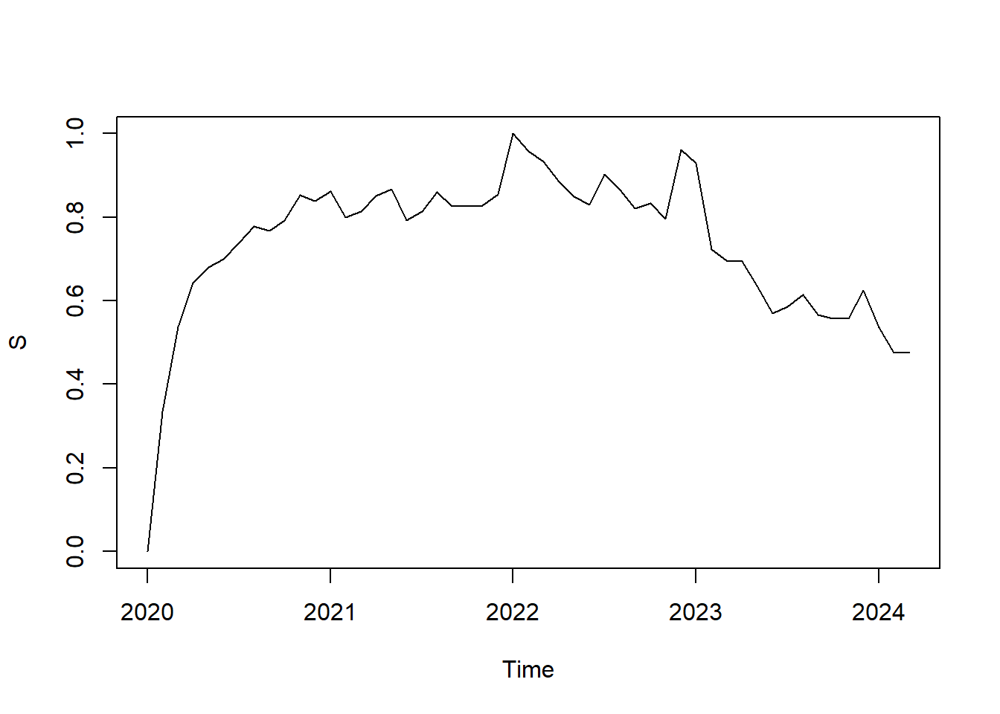
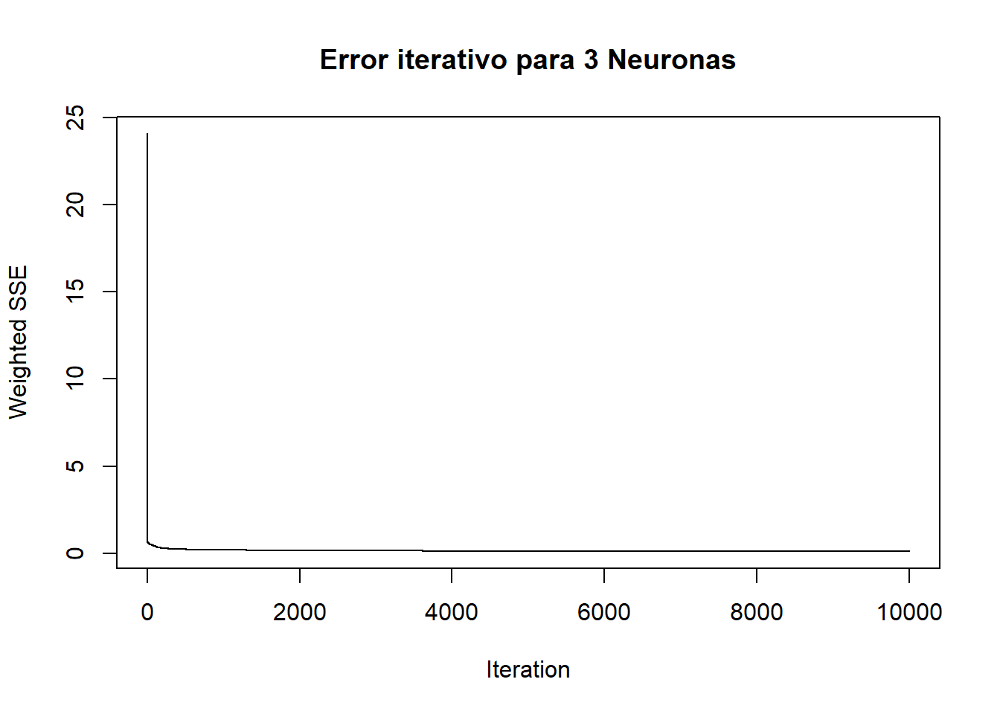
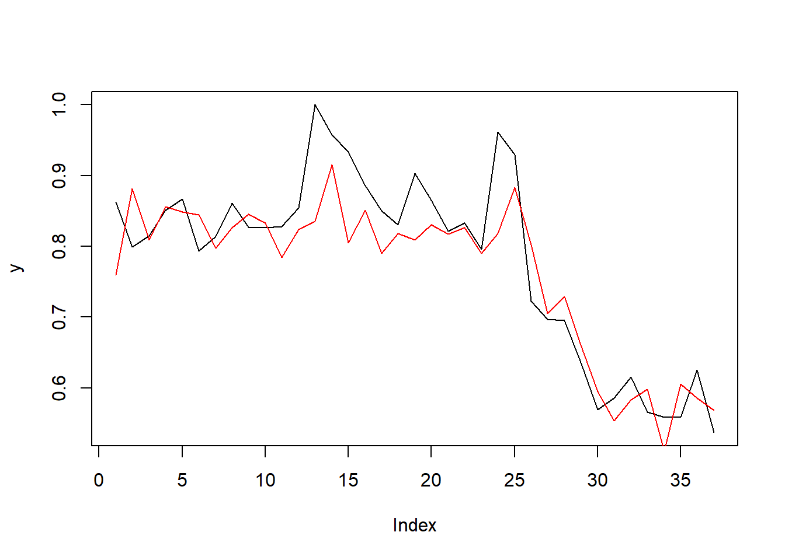
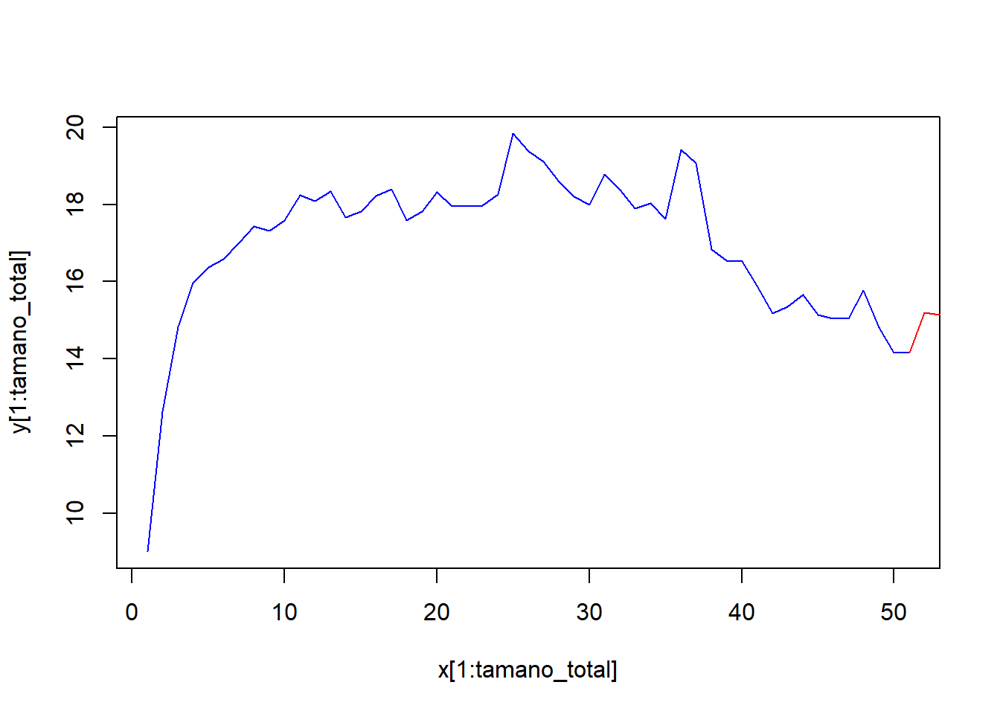
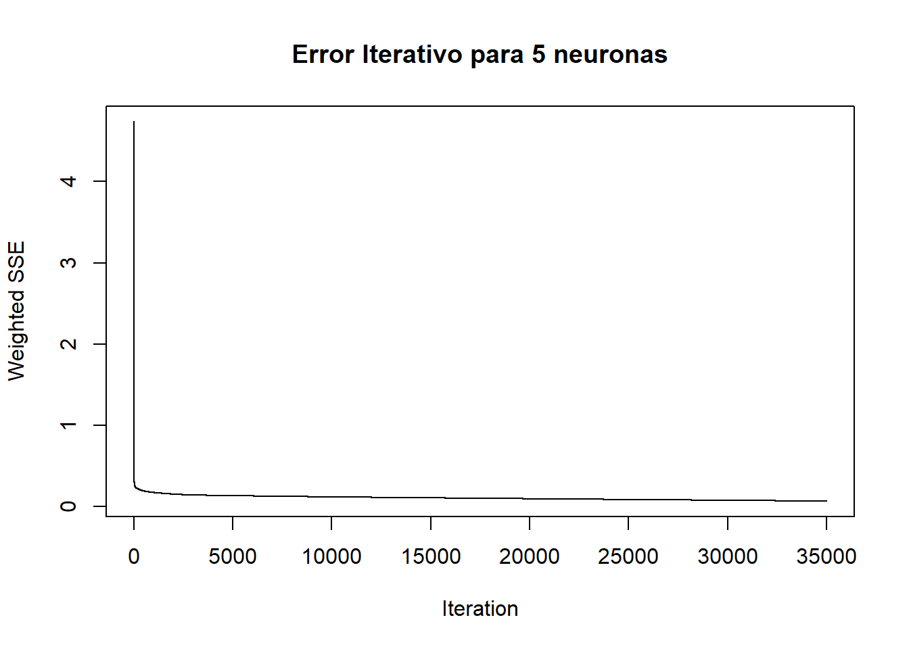
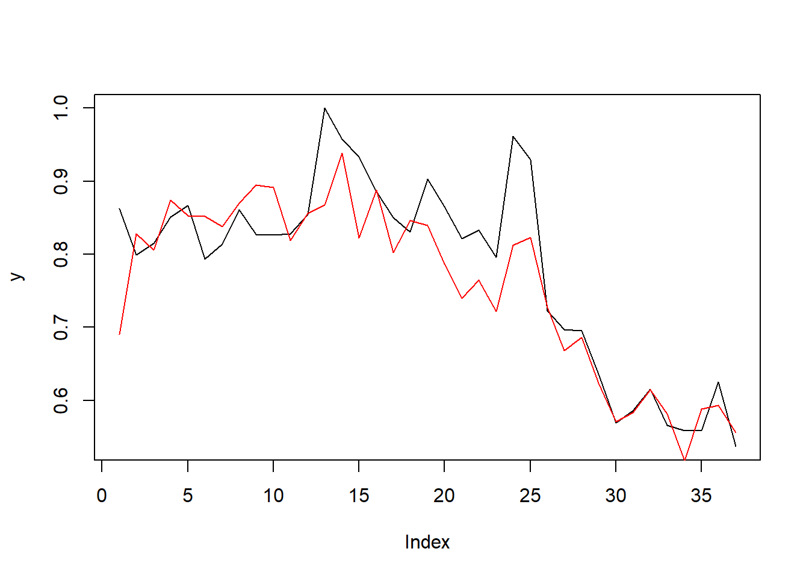

5 Redes Neuronales recurrentes.
La idea de las redes neuronales recurrentes (RNN) es hacer uso de información secuencial. Esto es, para procesar datos en los cuales hay una dependencia de los datos procesados anteriormente. Debido a la naturaleza de las series de tiempo, la RNN son una herramienta muy apropiada para modelarlas, ya que son un tipo de redes con una arquitectura que implementa una cierta memoria y, por lo tanto, un sentido temporal. Esto se consigue implementando algunas neuronas que reciben como entrada la salida de una de las capas e inyectan su salida en una de las capas de un nivel anterior a ella.
Se cuenta con las redes de ELMAN y JORDAN, las entradas de estas neuronas, se toman desde las salidas de las neuronas de una de las capas ocultas, y sus salidas se conectan de nuevo en las entradas de esta misma capa, lo que proporciona una especie de memoria sobre el estado anterior de dicha capa.
Una red neuronal recurrente no tiene una estructura de capas definida, sino que permiten conexiones arbitrarias entre las neuronas, incluso pudiendo crear ciclos, con esto se consigue crear la temporalidad, permitiendo que la red tenga memoria. Se denominan recurrentes porque realizan la misma tarea para cada elemento de una secuencia, y la salida depende de los cálculos anteriores.
5.1 Modelo de Elman
Es un tipo específico de RNN que fue desarrollado por Jeffrey Elman en 1990. Es conocido por su arquitectura de red simple pero efectiva que introduce una capa de contexto para capturar y almacenar información sobre estados previos, lo que le permite aprender dependencias temporales en secuencias de datos.
Consta de las siguientes componentes:
Capa de Entrada: Recibe los datos de entrada.
Capa Oculta: Procesa los datos de entrada y también recibe la salida de la capa de contexto.
Capa de Salida: Produce la predicción o salida final.
Capa de Contexto: Almacena una copia de la salida de la capa oculta en el tiempo t-1 y la alimenta de nuevo a la capa oculta en el tiempo t. Esto permite a la red “recordar” información sobre los estados previos y capturar dependencias temporales.
Ejecución del modelo:
Para ejecutar este modelo se utilizará la transformación logística, esta es una forma de normalización que puede ayudar a manejar mejor los valores extremos y a garantizar que los datos estén en un rango específico, previamente se ejecutaron los modelos con los datos crudos, con una diferenciación y con dos diferenciaciones sin lograr ajuste. Con la transformación logarítmica sí se logró:
## [1] 51En este caso, se evidencia que contamos con 51 datos de casos nuevos de COVID, para aplicar redes neuronales debemos normalizar datos y para ello hemos asociado a nuestro dataset de base una variable “Z” y a partir de esta hemos realizar la normalización a través de la variable “S”.
## Jan Feb Mar Apr May Jun Jul
## 2020 9.004545 12.630337 14.836152 15.969380 16.368065 16.578808 17.011414
## 2021 18.347095 17.659231 17.827182 18.224481 18.392062 17.594653 17.821792
## 2022 19.836313 19.376156 19.113990 18.597660 18.214606 17.998059 18.783804
## 2023 19.075335 16.829904 16.552600 16.535733 15.888972 15.172339 15.348595
## 2024 14.818648 14.151991 14.153216
## Aug Sep Oct Nov Dec
## 2020 17.441686 17.326382 17.582136 18.251031 18.098591
## 2021 18.328071 17.963014 17.957092 17.970225 18.258388
## 2022 18.371876 17.905457 18.023692 17.621661 19.421381
## 2023 15.666783 15.135003 15.052813 15.048553 15.771688
## 2024## Jan Feb Mar Apr May Jun Jul
## 2020 0.0000000 0.3347368 0.5383799 0.6430008 0.6798077 0.6992638 0.7392024
## 2021 0.8625138 0.7990095 0.8145149 0.8511940 0.8666653 0.7930476 0.8140173
## 2022 1.0000000 0.9575179 0.9333144 0.8856463 0.8502823 0.8302905 0.9028312
## 2023 0.9297457 0.7224452 0.6968443 0.6952871 0.6355773 0.5694170 0.5856893
## 2024 0.5367640 0.4752175 0.4753306
## Aug Sep Oct Nov Dec
## 2020 0.7789255 0.7682806 0.7918920 0.8536451 0.8395717
## 2021 0.8607575 0.8270551 0.8265084 0.8277208 0.8543243
## 2022 0.8648017 0.8217413 0.8326569 0.7955410 0.9616930
## 2023 0.6150647 0.5659701 0.5583823 0.5579890 0.6247496
## 2024
A continuación verificamos cuántas filas en total tiene nuestro conjunto de datos.
## [1] 51Ahora dividiremos los conjuntos de entrenamiento en un 75% y prueba en un 25% respectivamente.
## [1] 0 1 2 3 4 5 6 7 8 9 10 11 12 13 14 15 16 17 18 19 20 21 22 23 24
## [26] 25 26 27 28 29 30 31 32 33 34 35 36 37## [1] 38 39 40 41 42 43 44 45 46 47 48 49 50 51Ahora vamos a generar un conjunto de datos con n columnas, donde cada una de ellas representará un valor futuro de la serie, utilizando una variable tipo zoo que refleje el período de desfase de la serie.
library(zoo)
library(quantmod)
y <- as.zoo(S)
x1 <- Lag(y, k = 1)
x2 <- Lag(y, k = 2)
x3 <- Lag(y, k = 3)
x4 <- Lag(y, k = 4)
x5 <- Lag(y, k = 5)
x6 <- Lag(y, k = 6)
x7 <- Lag(y, k = 7)
x8 <- Lag(y, k = 8)
x9 <- Lag(y, k = 9)
x10 <- Lag(y, k = 10)
x11 <- Lag(y, k = 11)
x12 <- Lag(y, k = 12)
slogN <- cbind(y,x1,x2,x3,x4,x5,x6,x7,x8,x9,x10,x11,x12)## Warning: package 'DT' was built under R version 4.3.2A continuación, procederemos a eliminar los valores NA que se generaron al desplazar la serie.
Luego definimos los valores de entrada y salida de la red neuronal:
Ahora se desarrolla la red de Elman experimentando con diversas configuraciones de neuronas en las capas ocultas, variando también el número máximo de iteraciones y la tasa de aprendizaje. El objetivo es afinar la curva de predicción para que se ajuste lo más cercanamente posible al modelo de la serie. Estos son los parámetros que hemos seleccionado para construir nuestra red. Además, establecemos una semilla para garantizar la reproducibilidad de los resultados.
En la gráfica siguiente se observa cómo evoluciona el error de la red con el número de iteraciones para los parámetros expuestos.

En la gráfica anterior se observa una convergencia rápida hacia cero, se espera entonces un ajuste rápido del modelo Ahora realizamos la predicción con el resto de los términos de la serie que son los datos seleccionados para test, pasamos pues una vez entrenada a probarla y a representarla gráficamente para ver el ajuste del modelo.
y <- as.vector(outputs[-test])
plot(y,type="l")
pred <- predict(fit, inputs[-test])
lines(pred,col = "red")
El ajuste con los parámetros seleccionados, es decir size 3 que significa el número de neuronas en las capas ocultas de la red de Elman y número máximo de iteraciones que son 10000 demuestra una buena capacidad predictiva, ya que la curva del modelo y la de la predicción se muestran muy cercanas.
Esta visualización gráfica es útil para afinar tanto la predicción como el modelo mientras se prueban distintos parámetros de la red de Elman, asegurándose de que la curva del modelo y la de la predicción se ajusten lo mejor posible.
Ahora, con el efecto memoria, se avanza la serie temporal al menos un paso con una precisión excelente. Para lograrlo, reintroduciremos los datos de entrenamiento.
## [,1]
## feb. 2024 0.5715654
## mar. 2024 0.5662302Posteriormente desnormalizamos los datos para mejorar la interpretación:
## [,1]
## feb. 2024 15.19561
## mar. 2024 15.13782El modelo predice aproximadamente 15 casos nuevos en febrero y en marzo de 2024.
Ahora veamos la representación de los valores predichos para el siguiente periodo:
x <- 1:(tamano_total+length(mod1))
y <- c(as.vector(Z),mod1)
plot(x[1:tamano_total], y[1:tamano_total],col = "blue", type="l")
lines( x[(tamano_total):length(x)], y[(tamano_total):length(x)], col="red")
## [1] 535.2 Modelo de Jordan.
El modelo de Jordan es otra variante de las redes neuronales recurrentes (RNN), desarrollado por Michael I. Jordan en 1986. Al igual que el modelo de Elman, el modelo de Jordan introduce una capa adicional que permite a la red capturar dependencias temporales en secuencias de datos. Sin embargo, hay algunas diferencias clave en la forma en que ambos modelos manejan la información de estado anterior.
La red de Elman tiende a ser más adecuada para tareas donde es crucial capturar dependencias temporales intermedias y dinámicas complejas entre las entradas y las salidas ocultas. La red de Jordan: Es más adecuada para tareas donde la salida anterior directa puede ser un predictor importante del siguiente estado, como en el modelado de secuencias de decisiones.
Arquitectura de la Red Neuronal de Jordan:
La red neuronal de Jordan consta de las siguientes componentes:
Capa de Entrada: Recibe los datos de entrada.
Capa Oculta: Procesa los datos de entrada y también recibe la salida de la capa de contexto.
Capa de Salida: Produce la predicción o salida final.
Capa de Contexto: Almacena una copia de la salida de la capa de salida en el tiempo t-1 y la alimenta de nuevo a la capa oculta en el tiempo t.
Ejecución del modelo:
set.seed(42) #Se fija la semilla
#teniendo los datos previamente separados, se ajustan los datos de entremaniento entrenando la red de Jordan:
fit <-jordan(inputs[train],outputs[train],size=5,learnFuncParams=c(0.1),
maxit=35000)
#Y graficamos el error iterativo:
plotIterativeError(fit, main = "Error Iterativo para 5 neuronas")
De nuevo se observa cómo el error tiende a cero rápidamente.
A continuación se realiza una comparación visual entre las salidas reales y las predicciones del modelo:
y <- as.vector(outputs[-test])
plot(y,type="l")
pred <- predict(fit, inputs[-test])
lines(pred,col = "red")
A diferencia del modelo de Elman, con el modelo de Jordan hay mayor diferencia entre los valores observados y los predichos por el modelo, los tres últimos periodos son los más parecidos.
## [,1]
## feb. 2024 14.97098
## mar. 2024 15.63828Con el modelo de Jordan se predicen aproximadamente 15 casos en febrero y cerca de 16 en marzo.
x <- 1:(tamano_total+length(mod2))
y <- c(as.vector(Z),mod2)
plot(x[1:tamano_total], y[1:tamano_total],col = "blue", type="l")
lines( x[(tamano_total):length(x)], y[(tamano_total):length(x)], col="red")En la gráfica de predicción, similar al modelo de Elman, en el modelo de Jordan se presenta un incremento en los casos para el siguiente periodo.